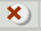
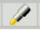
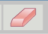
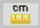
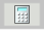
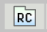

Welcome to Experience ISTEP+ Online
Grade 5 Applied Skills Practice Test
Start the testHelp and Instructions
The table below includes definitions of and explanations for some of the tools you will find on the Grade 5 Applied Skills Practice Test.When you are taking the test, click on the picture of a tool at the top of the screen to use the tool. When you finish using the tool, click on the picture to put it away again.

• Click on the red “X” icon. Then click the mouse with the pointer on an answer and a red “X” will appear and cross it out.
• Use the eraser tool to clear an “X,” or turn off the option (Answer Choice) eliminator and then click on the answer choice with the normal pointer to select that answer.
• When the option (Answer Choice) eliminator is turned off, you can still click on an answer choice you eliminated if you want to select that answer.

• Hold down the mouse button and drag the highlighter over the area that you wish to highlight.
• Highlighting can be removed with the eraser.

• Click on the eraser icon.
• To erase a red “X,” click on the “X,” and it will disappear.
• When you are done using the eraser, click on the eraser icon again to turn off the eraser tool.

• The numbered box at the bottom of the screen for that question will be shaded yellow.
• Then, instead of “Mark for Later Review,” you should see the word “Unmark.” Click on it and the yellow in the numbered box will disappear.
• Marking questions is not necessary, but it may help you keep track of questions you want to review later.

• Click on the ruler icon and the ruler will appear. You can move the ruler around in different ways to help you work a problem.
• Click on the blue bar, hold down the mouse button, and drag the ruler to move it in any direction.
• Now look at the circles and arrowheads on the ends of the ruler. Each end can be moved in the directions shown by the arrowheads.
• Click in the circle on either end of the ruler, hold down the mouse button, and drag the end of the ruler in any of the directions shown on the arrowheads.

• Click on the calculator icon in the toolbar to open the calculator.
• Use your mouse to click on the calculator keys. Practice using the calculator with a few simple problems, such as “one plus two.”
• You can also move the calculator by clicking on any part of the border of the calculator, holding down the button, and dragging it to another part of the screen.

• Click on the icon that has the letters “RC” on it. The “RC” stands for “Reference Card.”
• Click on the RC icon and the ISTEP+ Mathematics Reference Sheet will open.
• You will need to scroll down to see all of the information. Look at the scroll bar on the right side of the reference sheet. Now scroll down slowly by clicking on the down arrow.
• The bubble will appear black, and the box at the top will show the digit, fraction bar, or decimal point that you selected.
• If you want to change a value in the column, just click on a different bubble in that same column.
• If an answer doesn’t require all columns, enter the response in any of the columns, without regard to alignment left or right.